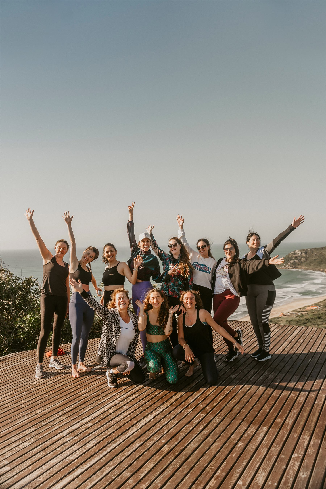

O que você vai experienciar
no Retiro InLuz?



Uma experiência para se reconectar com a sua essência feminina e voltar pra casa mais leve, inteira e em paz com seu corpo.
O que é o
clareza, reconexão, liberação e renovação.
Em meio à natureza exuberante do litoral norte de São Paulo, o Retiro InLuz é um dia profundo e conduzido — quatro dias inteiramente dedicados ao seu ser, onde ferramentas ancestrais e sabedorias contemporâneas se encontram para te reconectar com quem você realmente é.
Aqui você vai:
Para você que:
qual o valor
Vagas limitadas para garantir atenção individual.
Condições de parcelamento disponíveis — entre em contato.
Se você sente que chegou o momento de parar, olhar e se realinhar…
essa experiência foi criada para você!

Naturóloga especializada em saúde feminina integrativa
Medicinas tradicionais • Neurosciências • Ginecologia natural
Atua no universo das terapias integrativas há mais de 8 anos. Aos 16 anos concluiu sua primeira formação em Yoga e desde então seguiu uma jornada de aprofundamento nos saberes ancestrais tradicionais para o bem estar integral do Ser.
Integra a Naturologia, que traz o olhar ampliado das medicinas tradicionais vitalistas aliado à ciência moderna baseada em evidência, com diversas outras formações em saúde da mulher, neurosciências, desenvolvimento mental, thetahealing, yoga entre outras.
Hoje realiza atendimentos (online e presencial em Riviera de São Lourenço, SP) e retiros terapêuticos, conduz tratamentos de saúde imersivos e personalizados para quem deseja aprofundar em seus cuidados, e está desenvolvendo o Portal InLuz — plataforma de saúde e autoconhecimento feminino que integra cursos, jornadas terapêuticas e encontros online e presenciais.